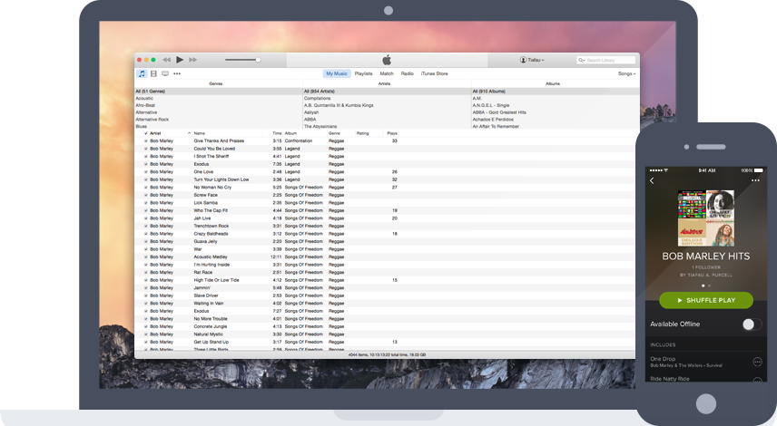

If you know me, you know how much I enjoy listening to music. I listen to all kinds of music from reggae and hip-hop to classical and piano. Much like design, I feel music too is a universal language that can cross borders and change people for good. I work better when I'm listening to music. Here is just some of the music I enjoy listening to. Enjoy!
